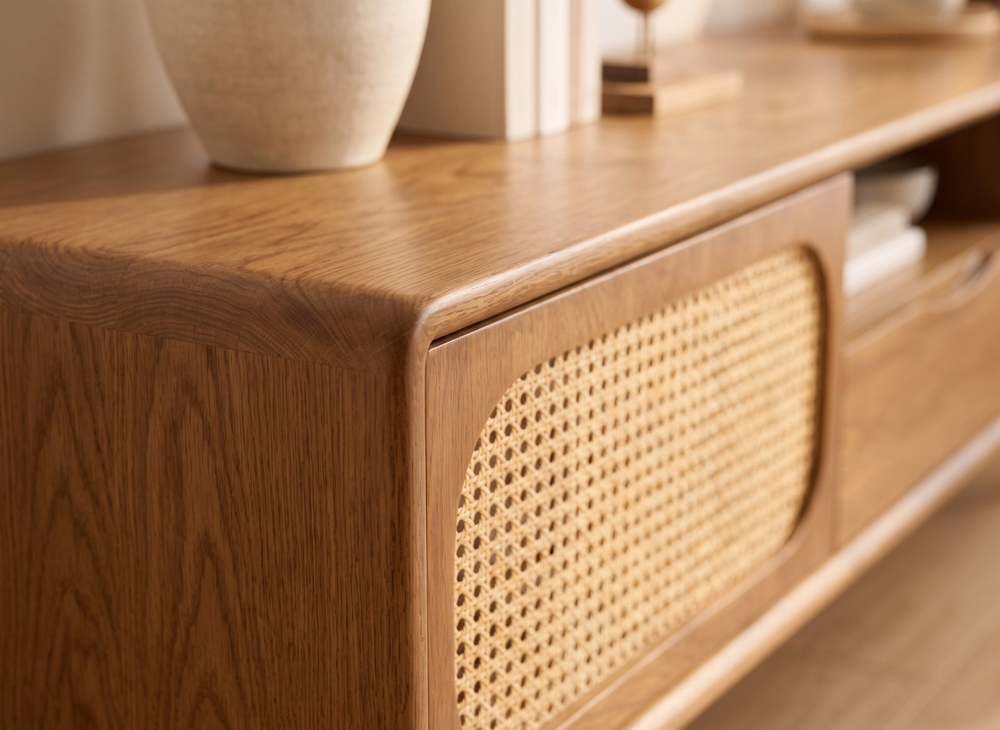
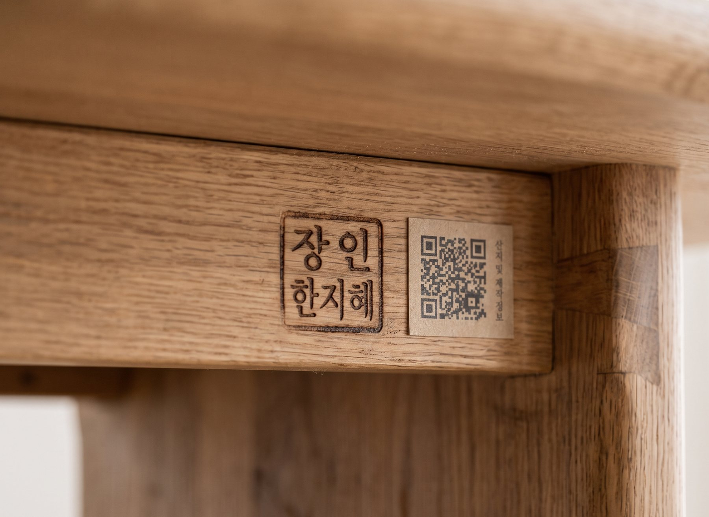
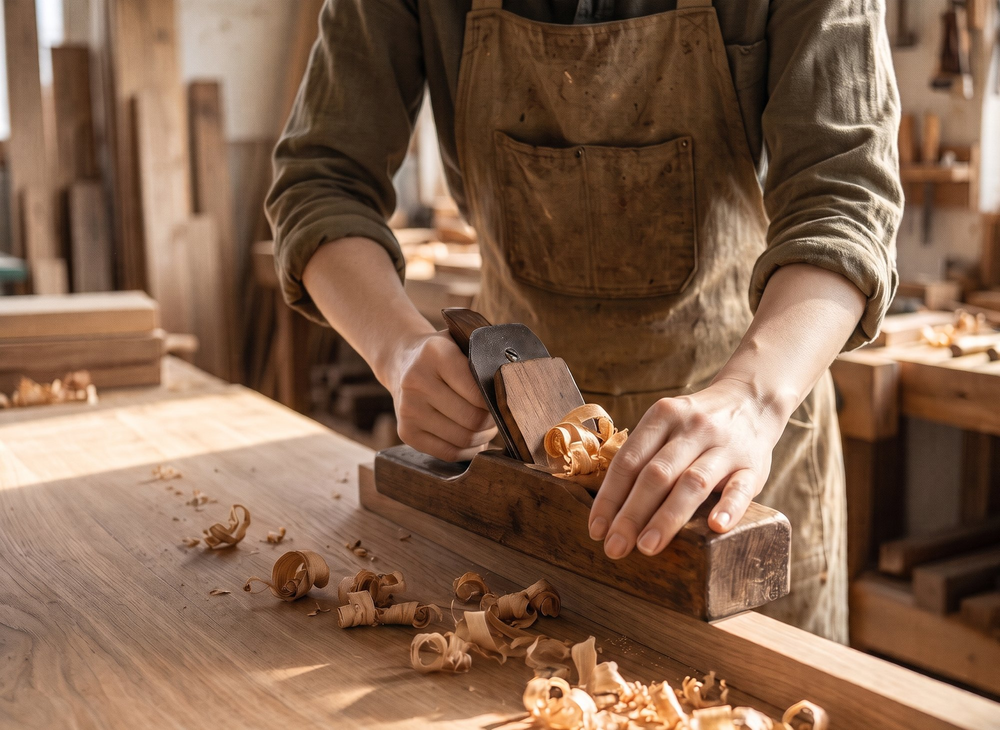

DAMSO DINING
타원형 원목 식탁
450만 원부터
모서리를 둥글린 타원형 상판을 두 장의 넓은 판재 다리가 받칩니다. 모난 곳이 없어 여럿이 둘러앉기 편하고, 상판과 다리를 못 없이 짜맞춤으로 이어 세대가 바뀌어도 다시 조이고 고쳐 쓸 수 있습니다.
MADE BY HAND
만든 이의 이름이
식탁 아래에 남습니다
모든 식탁은 한 명의 장인이 처음부터 끝까지 맡습니다. 상판 아래 앞판에 장인의 이름을 새기고, 옆에 붙인 QR로 수종·산지·제작 정보를 확인할 수 있습니다.
장인 한지혜
경력 18년 · 경기 남부 공방

사양
| 길이 | 타원형 크기 (W × D × H) | 권장 인원 | 시작가 |
|---|---|---|---|
| 1800 | 1800 × 900 × 730 mm | 4~6명 | 450만 원 |
| 2100 | 2100 × 950 × 730 mm | 6명 | 520만 원 |
| 2400 | 2400 × 1000 × 730 mm | 6~8명 | 590만 원 |